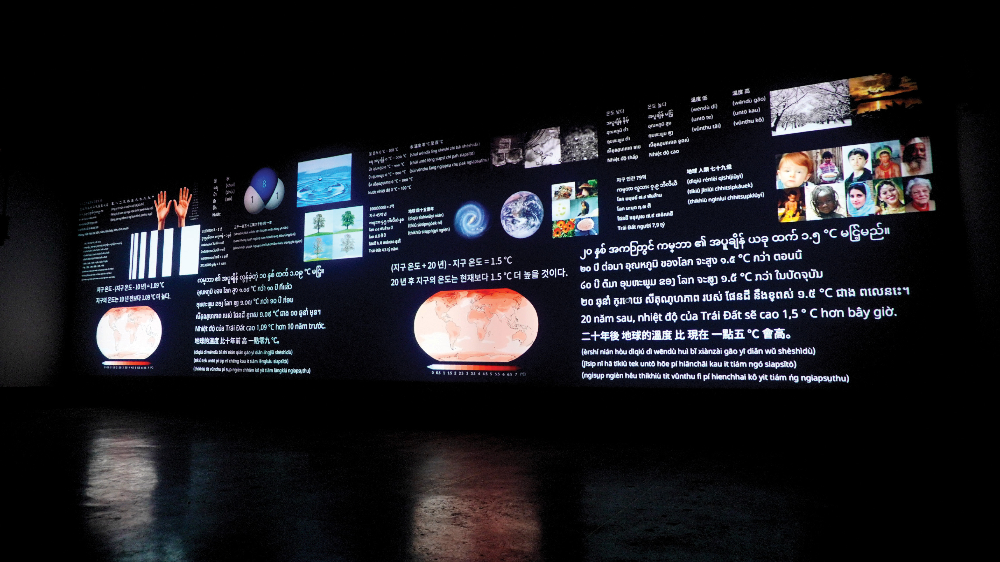
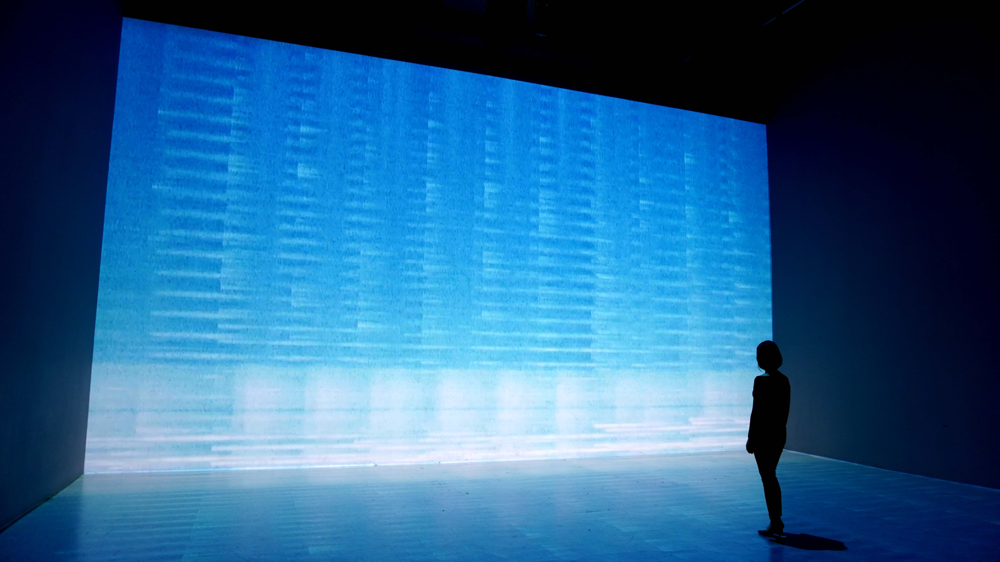
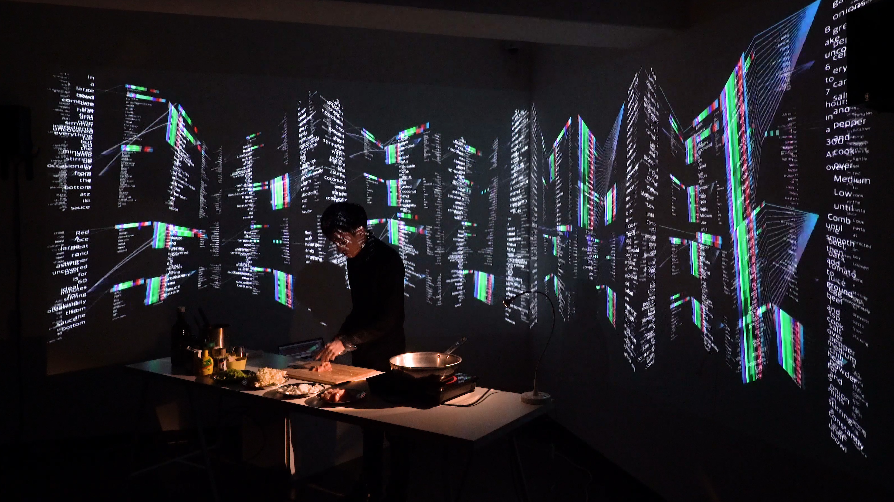
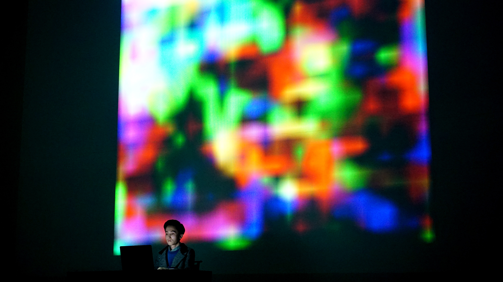

언해피서킷은 한국의 뉴미디어 아티스트이다. 과학과 예술 그리고 테크놀로지의 융합으로 이루어지는 그의 작업은 논리학, 언어학, 인류학, 미래학 그리고 우주론을 아우르는 다학제적 관점을 기반으로 한다. 그의 작품을 관통하는 핵심 주제는 바로 ‘미지에 대한 탐구’이다. 그는 우리가 아직 알지 못하는 미지의 존재에 대한 가능성을 탐구함으로써 우주와 인간에 대한 우리의 인식을 확장해나가고자 하며, 이를 통해 본질적으로 유한하고 외로운 인간의 삶과 정신을 광대한 우주와 연결하고자 한다. 그는 현대자동차 ZER01NE의 Creator로 활동 중이며, 월간 퍼블릭아트의 ＜제 16회 퍼블릭아트 뉴히어로＞에 선정되었다. 또한 그의 작품은 국립아시아문화전당, 한국문화예술위원회, 서울문화재단, C-LAB(대만), BeFantastic(인도), ARCOLABS(인도네시아)와 같은 다수의 국내외 예술기관에서 선정 및 전시되었으며, 제주현대미술관에 소장되었다.
광대한 우주적 시간과 비교해 우리 인간의 삶은 찰나와도 같다. 그렇기 때문에 우리는 우리의 삶이 이 우주에서 어떤 의미를 지닐 수 있기를 바란다. 프로젝트 ＜1 HUMAN MESSAGE＞는 한 인간이 살아온 ‘시간’에 대한 짧은 기록이자 데이터인 ＜1 HUMAN MESSAGE＞와 이를 광대한 우주에 남기기 위한 여정을 기록한 우주 여행기 ＜1 HUMAN MESSAGE Transmission Log＞ 그리고 메시지를 우주로 전송하기 위해 제작된 이동식 항성간 전파 송신기 ＜1HMT-1＞ 등으로 이루어진 다원 우주예술 프로젝트이다. ＜1 HUMAN MASSAGE＞는 시간을 통해 우주와 지구 그리고 인류 문명을 거쳐 한 인간의 존재까지 차례로 정의한다. 그리고 언해피서킷은 이를 우주로 전송함으로써 인간의 존재를 우주로 확장하고자 한다. 이는 한 인간으로서 가장 먼 우주까지 도달하고자 하는 작가 스스로의 노력이자, 우주로부터 시작되었지만 언젠가부터 우주와 단절된 모든 인간의 삶과 정신을 다시 우주와 연결하기 위함인 동시에, 거대한 침묵을 넘어 이 우주의 모든 고립된 존재들과 인류 사이의 우주적 연결을 이루기 위함이다.

＜1 HUMAN MESSAGE＞, 2023

＜1 HUMAN MESSAGE Transmission Log＞, 2023
2020년도부터 현재까지 언해피서킷은 외계지성체와의 대화를 위한 언어 체계를 개발하기 위한 프로젝트를 진행 중에 있다. 특히 그는 우주의 언어인 수학과 논리를 인간의 언어와 연결시킴으로써 인간의 언어에 담긴 인간의 고유한 사고방식과 문화 그리고 다양한 추상적인 개념을 외계지성체에게 전달할 수 있는 새로운 언어 체계를 개발하고자 한다. 즉, 외계지성체에게 인간의 언어와 그 언어가 기반하는 인간의 고유한 특징을 소개하는 ‘인간 언어 사전’의 시스템을 설계함으로써 별과 별 사이를 오가는 미지와의 대화를 준비하고자 하는 것이다.
언어는 그 언어를 사용하는 존재의 사고방식과 정서 그리고 문화와 상호작용한다. 이는 다른 존재를 진정으로 이해하기 위해서는 그 존재의 언어를 이해할 수 있어야 함을 의미한다. 본 연작은 외계지성체와의 소통을 위해 인간의 언어에 대한 구조화된 정보를 담은 ‘인터스텔라 메시지’를 발전시켜가는 과정이다. 특히 지구 언어의 다양성과 고유성을 인터스텔라 메시지에 반영하기 위해 소외된 세계의 언어들에 대한 관심을 지속적으로 확장해나가고 있다. 또한 본 연작은 지구의 기후 변화에 대한 메시지를 우주에 전한다. 인류의 현재를 상징하는 이 메시지는 이 우주를 살아가는 문명 대 문명으로서 외계지성체와 인류 사이의 공감대를 형성하는 동시에, 인류에 대한 우리 스스로의 관점을 외계지성체의 관점, 즉 우주적 관점으로 전환한다. 먼 우주를 향하는 인터스텔라 메시지는 사실 우리 자신을 향하는 우주의 메아리이다.
＜9개의 지구 언어로 쓰인 인터스텔라 메시지＞, 2022
2018년에서 2019년 사이에 언해피서킷은 그의 작품에 주요한 주제이자 매체로서 ‘인공지능’에 집중하였다. 그는 인공지능을 ‘새로운 인간으로서의 인공지능’, ‘인간을 보완하는 테크놀로지로서의 인공지능’ 그리고 ‘인간을 비추는 거울과 같은 존재로서의 인공지능’이라는 세가지의 큰 관점으로 구분한다. 먼저 ‘새로운 인간으로서의 인공지능’이라 함은 말그대로 인간과 같은 혹은 인간을 초월하는 존재로 진화한 새로운 지적 존재로서의 인공지능을 의미한다. 즉, 진정한 포스트 휴먼으로서의 인공지능을 의미하는 것이다. 반면 ‘인간을 보완하는 테크놀로지로서의 인공지능’은 인공지능을 하나의 새로운 도구로서 인식하는 관점을 의미한다. 앞선 관점이 SF적 미래관에 기반한 관점이라면, 도구로서의 인공지능은 현 시대의 인공지능에 대한 관점이다. 마지막으로 ‘인간을 비추는 거울로서의 인공지능’은 인공지능에 대한 인문학적 또는 예술적 관점이자 해석이다. 인공지능이 학습하는 데이터는 사실 우리 인간에 관한 것이다. 인공지능은 데이터를 통해 바로 우리 인간에 대해 학습을 하고 있는 것이다. 이러한 인공지능이 생성한 결과물은 그 자체로 우리 인간의 모습을 거울처럼 드러낸다. 결국 언해피서킷에게 인공지능은 언젠가 새로운 인간이 될지도 모를 가능성을 지닌 존재인 동시에, 현재 우리의 삶에 가장 큰 영향을 끼치는 테크놀로지인 한편, 우리 인간의 모습을 비추며 ‘인간성이란 무엇인가?’에 대해 질문하는 예술적 매개체이다.
＜A Synthetic Song Beyond the Sea＞, 2019
고래는 인간과 마찬가지로 감정을 느끼고 표현할 수 있으며, 복잡한 사회를 이루며 살아가고, 소통을 위한 언어 체계를 가지고 있다. 그리고 인간을 포함한 지구 상의 모든 포유류와 한 조상을 공유하며 함께 진화해왔다. 하지만 인간은 오래전부터 고래의 생존을 위협해왔으며 이는 오늘날까지도 여전히 지속되고 있다. 본 작품은 인공지능을 활용해 흰수염고래의 발성음과 인간의 음악을 합성하여, 고래와 인간이 함께 듣고 교감할 수 있는 새로운 차원의 음악을 만들어내고자 한 시도이다. 이를 통해 본 작품은 고래와 인간이 서로를 이해하며 함께 공존해나가는 미래를 그린다. 고래의 삶과 죽음을 통해 우리는 인간성의 진실한 모습을 마주할 수 있게 된다. 이는 서로를 이해하지 못해 일어난 인류 역사의 수많은 비극과 여전히 우리 스스로를 파괴할 가능성을 지닌 채 살아가는 현대 인류 문명의 모습과도 결코 무관하지 않다.
＜Learning About Humanity＞, 2019
한해 약 650억 마리가 도축되는 닭은 ‘인류세’의 상징으로 여겨진다. 이처럼 닭고기로 대표되는 풍요의 시대가 지속되면서, 우리는 일상에서 흔히 접하는 고기가 한때는 살아있는 생물이었다는 사실도 망각하게 된다. 무엇보다 가축의 사육 및 도축 과정에서 필연적으로 발생하지만 우리가 애써 외면해온 불편한 진실은 우리 스스로에게 인간성에 대해 다시금 질문하게 만든다. 인공지능은 방대한 양의 데이터를 통해 바로 우리 인간을 학습한다. 이러한 인공지능이 생성한 결과물은 그 자체로 우리 인류의 모습을 거울처럼 비춘다. 결국 인공지능이 생성한 닭고기 요리는 풍요로운 현대 인류 문명의 이면에 감춰진 인간성의 진실한 모습을 드러내는 ‘인간성의 거울’이다.
＜i Remember＞, 2019
우리 인간에게 있어 기억이란 곧 자신의 정체성을 의미한다. 기억을 잃는다는 것은 결국 자신 자신을 잃는다는 것과 같은 것이다. 기억은 결국 우리의 인생 그 자체이다. 하지만 인간의 기억은 불완전하다. 그렇기 때문에 인간은 오래 전부터 각종 매체에 자신의 기억을 기록하고 보존해왔다. 선사시대의 동굴 벽화에서부터 컴퓨터 메모리에 이르기까지, 기술의 발전과 함께 인간은 기억을 저장하는 뇌의 영역을 새로운 매체로 확장시키며 급격히 진화해온 것이다. 그리고 이러한 인간의 진화는 이제 인공지능에까지 확장되고 있다. 과연 기억에는 그 경험의 순간만이 가지는 형언할 수 없는 특성이 존재하는 것일까? 아니면 언제나 복사와 전송이 가능한 데이터에 불과한 것일까? 만약 기억이 데이터에 불과하다면, 인공지능은 인간의 기억을 학습할 수 있을까? 만약 인공지능이 인간의 기억을 학습할 수 있다면, 나의 기억을 학습한 인공지능은 바로 ‘나’인가? 본 작품에서 인공지능은 바로 작가의 어머니에 대한 디지털화된 기억 데이터를 학습하고 이를 바탕으로 새로운 이미지와 사운드를 생성해낸다. 이 생성물은 작가의 기억인가? 아니면 인공지능의 기억인가?